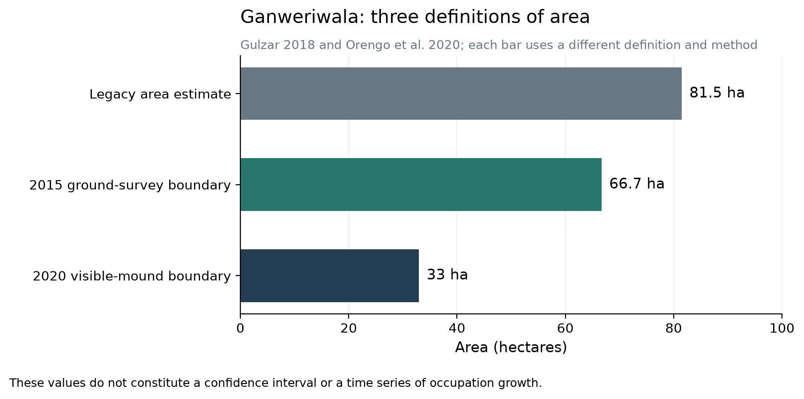
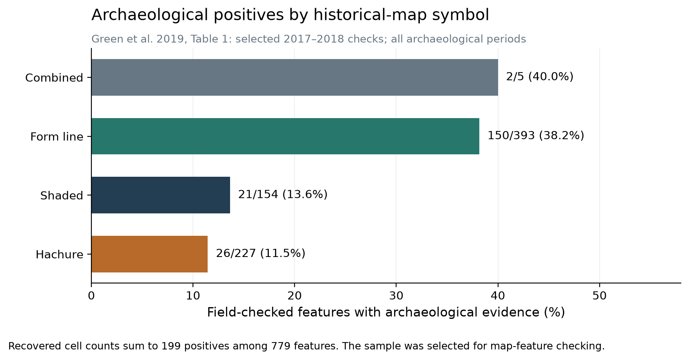
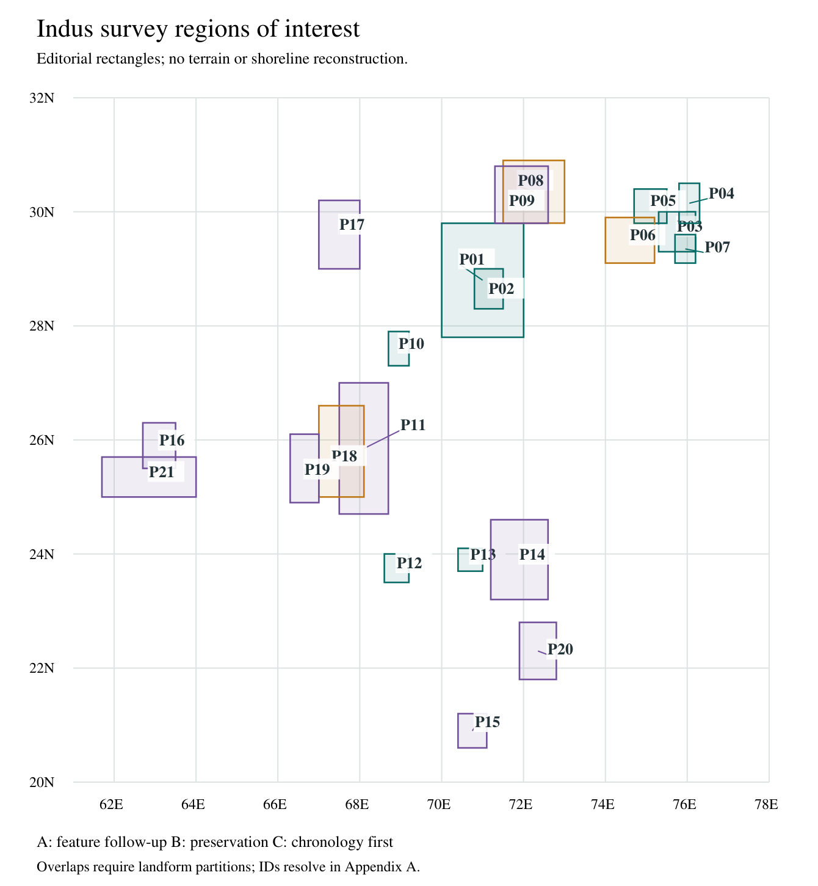
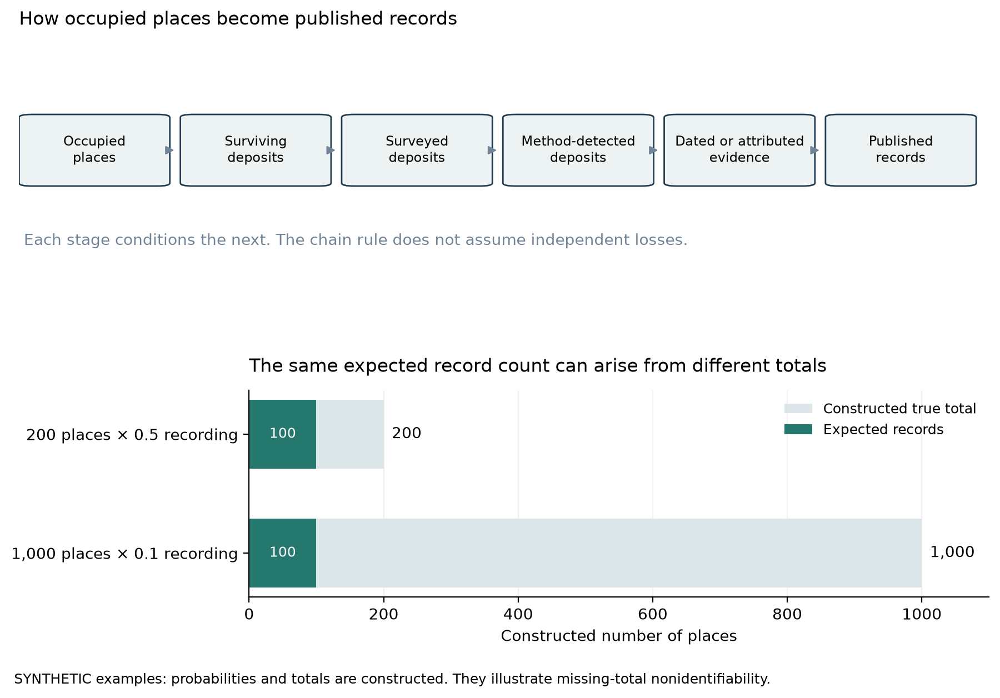

The Indus excavation gap: what repeat surveys reveal and how to test hidden settlement landscapes
The Indus excavation gap: what repeat surveys reveal and how to test hidden settlement landscapes
Complete working paper, 11 October 2026: a structured narrative review, an audit of published site counts and a proposed survey design. Prepared with AI research and writing assistance, including source checks and adversarial reviews by Codex and Claude Opus 5.5 (see Review and reproducibility); author names, affiliations and a submission venue have not been assigned. We did no fieldwork and no new analysis of satellite scenes, terrain or bathymetry for this paper.
Abstract
Most recorded Indus sites have never been excavated because investigation is selective, opened deposits are costly to conserve, access and publication are uneven, and rivers, farming and later construction have altered the record. The familiar figure of approximately 100 excavated sites among more than 1,000 recorded locations comes from historical inventories. Two early summaries give 96 excavated Mature Harappan sites among 1,022 or 1,056 locations; a recent review counts 142 excavated Early and Mature sites through 2024. These counts cover different periods and inventory dates, so no present excavation percentage can be computed from them. A 2019 field survey found archaeological material of several periods at 199 of 779 checked historical-map features and at 64 further locations off the maps, documenting local recording omissions. A 2020 satellite analysis of Cholistan proposed 337 mound clusters, 266 of them unmatched to its earlier site records; their identity, date and later confirmation still need reconciling. Other comparisons reveal features missing from maps or mounds split into finer units. We compare burial beneath alluvium and later cities, low-relief rural occupation, piedmont and cave contexts, and coastal change. Twenty-one overlapping regions of interest organize proposed tests, each with a rival explanation, comparison groups and a rule for downgrading its hypothesis. The first proposed task is a reconciled register that matches site records across lists; size-stratified ground checks and a coring pilot on paired landforms follow conditionally. Small settlements, intact urban deposits and environmental samples could add substantial evidence, but the available data support neither a regional artifact total nor a forecast of undiscovered cities.
1. Questions, scope and units
The opening question is why archaeologists have excavated so few of the recorded Indus sites. It contains three problems: how many locations are recorded, how many have been excavated, and how much of their surviving deposits has been investigated. A small test trench can put a large site into the excavated category, while a long-running urban excavation can leave most of its area unopened. A location known only from surface pottery may contain several phases, and separate mound names may refer to parts of one settlement. A ratio must therefore state its numerator, denominator and unit together.
We ask what current surveys reveal about the missing record and which investigations could distinguish occupation from concealment, destruction or mistaken attribution. Our reference interval for Mature Harappan urban occupation is approximately 2600–1900 BCE. Earlier and later sites enter the discussion when they supply a dated sequence, a regional comparison or an example of a preservation process. Assigning a site to the Indus Civilization requires its material associations and local archaeological classification as well as its date.
We keep four units separate: a recorded locality; a physical mound or artifact scatter; a phase-specific occupied footprint, the area occupied in one period; and an excavated deposit or feature. Remote-sensing pixels, map symbols and samples are observations of these units. A cemetery, quarry, seasonal camp or irrigation feature can be archaeologically significant without being a city. Several small locations may record one community's successive moves instead of simultaneous villages, which matters when reconstructing settlement density and the number of people present at one time.
Earlier studies recovered mounds from historical maps, detected them in satellite imagery and reconstructed regional landscapes through geoarchaeology. We combine their observations across the settings where settlement evidence can be hidden and state what a future investigation would need to measure. [R08,R09,R10,R11,R12]
Our evidence is published and archival: we ran no detector on new imagery, established no field access and fitted no national estimate of missing sites or artifacts. The 21 regions in Appendix A are questions that can be tested and dropped, not discoveries or selected parcels.
2. Evidence, access and shared assumptions
2.1 Search and reading depth
The review began with the project's preserved 8 October excavation outlook. Searches on 11 October followed excavation inventories, survey papers, geomorphic studies and the field projects they cite; searches for 2024–2026 work covered MAHSA, Kutch habitation and cemeteries, coastal reconstruction, Ghazi Shah, Lothal and Mohenjo-daro. The repository keeps the search-and-access record, source observations, dated calculations, the frozen first manuscript and all reviews. We did not keep a complete count of search hits, so the paper is a structured narrative review and not an exhaustive systematic review.
The final register holds 72 source records and states how deeply each was read. For 50 we saved a local copy, a PDF, XML or HTML file with a recorded hash. A saved copy does not mean every page was read, and a source without one may have been read through a publisher page or an indexed primary extract. Some sources that carry key counts were read only in part: Gadekar's excavation count and Possehl's historical total in publisher extracts (for Possehl, R38, the extract of the 2002 introduction); the Cambridge season account through an indexed copy of the primary page; and the 2026 Khambhat synthesis at the depth of its abstract and introduction. We later acquired the R01 teaching chapter and checked its count passage visually; the excerpt has no bibliography identifying its exact 2002 reference. We read the full publisher text of the 2022 Lothal study, including its dating table, and Giosan's primary article through a working web route, excluding a downloaded copy that held only an access-check page. We checked Green's Table 1 visually but could not obtain its row-level supplement. Each count is attributed at the depth actually read. [R01,R02,R10,R17,R29,R32,R34,R38]
Acquired source files stay local. The deliverables hold authored notes, source pointers, hashes, aggregate calculations and original figures, and a machine-readable claim register links each claim to its source observations and exact output files. We did not use the project's inscription-focused site sample to estimate settlement coverage; that selected sample is described in supplementary run notes.
2.2 Chronology conventions
We compare dates on the calendar BCE scale. BP counts back from 1950 CE by convention, and ka means thousands of years before present. Subtracting a calendar BP age from 1950 expresses the same calendar age approximately in BCE; it does not calibrate a radiocarbon measurement. Optically stimulated luminescence (OSL) ages, calibrated radiocarbon intervals, age-depth-model summaries and conventional radiocarbon BP keep their different meanings. Marine shells need calibration and a locally justified reservoir correction before archaeological comparison. Table 1 lists the dated observations used here.
| Observation | Published time system | Calendar comparison and use |
|---|---|---|
| Mature Harappan reference interval | Approximately 2600–1900 BCE | A working comparison interval; regional phase boundaries vary |
| Studied Sutlej abandonment [R15] | Shortly after approximately 8 ka | Roughly 6050 BCE on the age-before-present scale; substantially earlier than the urban interval |
| Markanda and foothill floods [R16] | Approximately 3.9–3.8 ka | Roughly 1950–1850 BCE; near the boundary between late Mature and early post-urban, not a date for every channel |
| Lothal downstream sample IUACD#20C3314 [R32] | Calibrated 3918–4385 BP; reported as 4150 ± 230 BP | Approximately 2435–1968 BCE, with the source's age range retained; marine calibration uses ΔR = −106 ± 51 years |
| Lothal downstream sample D-AMS 042905 [R32] | Calibrated 3424–3825 BP; reported as 3625 ± 200 BP | Approximately 1875–1474 BCE; the environmental transition continues after the reference urban interval |
| Mehrgarh sampled Period I cemetery [R40] | Preferred modeled start, 5223–4914 cal BCE | Pre-Indus comparison for burial processes; the model excludes two dates and does not date all of Mehrgarh |
| Siranda and Lower Sindh shell dates [R31] | Conventional, uncalibrated radiocarbon BP | No conversion to calendar BCE made here; sample, curve and reservoir information are needed |
The calendar conversions are orientation aids, not new age models. Published ka ages can use a measurement reference year other than 1950, especially for OSL. The rough ka-to-BCE conversions in Table 1 use 1950 for comparability; the offset is below their stated precision, and the published ages remain the chronological evidence. Dating the old substrate beneath a site and the young sediment above it gives different constraints: an old terrace can support later occupation, and a young cap can cover older occupation. Only a stratigraphically interpreted occupation horizon dates the proposed occupation directly. [R15,R16,R31,R32,R40]
2.3 Regions of interest and comparison rules
Appendix A lists 21 rectangles that we drew by hand as coarse regions of interest, rounded to 0.1 degree. They overlap, sometimes substantially, and include landforms outside published survey footprints. They index the questions by coordinate; for four named places we checked that the published point falls inside its rectangle. Their union is not a survey area. A sampling frame, the list of eligible units from which a sample is drawn, must come from published survey polygons and current parcel access. The diagram of the regions (Figure 3) carries no coastline, terrain, deposit-depth or suitability model.
Each region's evidence class describes what supports its next question: class A, documented archaeology or a published feature needing follow-up; class B, a preservation comparison with regional support; class C, a need to establish chronology or cultural attribution first. The classes are not discovery probabilities or field priorities. Three further levels are separate editorial judgments made in this AI-assisted research and drafting process. The information level is I2 for a documented archaeological or record question with a comparison that can discriminate between explanations, I1 for a regional process whose local frame or chronology is incomplete, and I0 for a lead resting on a mechanism alone. The preservation-evidence level is P2 when surviving archaeological contexts are documented somewhere in the region, including other periods and surface contexts, which predicts nothing about an untested parcel; P1 when a regional formation process is documented but survival of the target horizon is unknown; and P0 when local preservation and age are unestablished. The feasibility level is F0 for unverified access, F1 for confirmed data and a named partner with intervention arrangements incomplete, and F2 for confirmed relevant access and conservation arrangements. All regions currently have F0. We do not combine the levels into a score, and no expert rating was elicited. Section 8 discusses priority.
Each region also names a rival explanation, a sampling unit, a comparison and a demotion rule, which states the adequate observations that would lead us to downgrade or drop its hypothesis for the units inspected. Every future comparison must record prior survey effort, eligible and inaccessible units, time spent, visibility, sampled depth and volume, and dating outcomes. Where practical, surface teams and specimen classifiers should not know which units are candidates and which are comparisons. Mound detectors need size-stratified samples that include small and low-relief proposals. A comparison unit without a map symbol has unknown archaeological status until investigated, and a negative observation at inadequate depth or visibility is unresolved.
Within overlaps, the proposed tests use distinct landform strata. Where P08 and P09 overlap, older alluvium, covered margins and historically dated channels pose different questions within one frame. In P11 and P18, floodplain levees and backswamps are kept apart from fans and piedmont interfluves. Repeated visits to one deposit or to nearby pixels, like other correlated contexts, belong to one sampling block. A region label never substitutes for a sediment map. A one-square-kilometre cell eligible under several region labels belongs to one shared frame, carries every applicable label and is selected once; this applies to every overlap, including P03, P04 and P07, and P05 and P06. Transects along Ganweriwala's known margins (P02) are excluded from the random negative comparison cells drawn for Cholistan (P01).
3. Why the excavation gap persists
3.1 The headline ratio is historical
The University of Lucknow teaching chapter reports at least 1,022 Mature Harappan sites and approximately 96 excavated, citing Possehl (2002) and “Setter and Korisettar” (2002) as printed in the excerpt. Possehl's primary 2002 chapter gives 1,056 Mature sites and 96 excavated, referring to his 1999 appendix. The ratios are approximately 9.4% and 9.09%, respectively. We could not verify the exact Possehl title in the teaching chapter or how the two totals relate; they may draw on related historical compilations and not on separate surveys. Gadekar's review, published online in 2025 and in the 2026 issue of Lithic Technology, extends Uesugi's compilation to count 142 excavated Early and Mature sites through 2024. Dividing 142 by either old Mature-only denominator would mix period coverage and inventory dates. [R01,R02,R38]
The MAHSA database gives another current scale: approximately 10,000 entries of all periods compiled from earlier records, as reported in the 2025 Hidden in Plain Sight paper. It includes periods and kinds of record beyond the Indus Civilization, and part of its work is cleaning aliases, coordinates and classifications. It offers a route to reconciliation but not a ready-made Indus denominator. [R13,R27]
The share of localities with any excavation measures institutional activity. It says little about how much surviving cultural material has been sampled. A reconciled inventory should record survey, test excavation, substantial excavation, publication and present preservation separately, with phase assignments and cutoff dates.
3.2 Exposure creates continuing obligations
Excavation removes the deposit that preserves context and exposes structures to weather, salts and maintenance demands. The ICOMOS charter on archaeological heritage sets out principles of selective investigation and maintenance, and UNESCO's 2026 conservation report on Moenjodaro documents groundwater, salinity and deterioration of the exposed architecture. The research an intervention would yield has to be weighed against the capacity to preserve, document and maintain what it opens. Selected trenches, coring, geophysics and rescue recording can answer questions without clearing an entire settlement. [R03,R04]
An excavation also needs specialists, laboratories, storage, records and publication, and these costs continue after fieldwork. The sources we reviewed establish particular constraints and cases but give no national budget from which the gap could be apportioned among funding, staffing, permits and conservation, so we assign no percentages to causes.
3.3 Access, priorities and destruction vary by place and date
Ganweriwala shows access changing over time. A 2007 Japanese project report says political turmoil postponed planned excavation, and a University of Lahore account records excavation activity in 2024, so the old postponement does not describe the site today. Researchers also choose questions: an under-studied rural economy or a threatened workshop may justify intervention before another large urban exposure. [R05,R06,R23]
Later land use can both reveal and remove archaeology. At Lakhanjo-Daro in Sukkur, the government account of the 2017 trenches describes modern construction damage in the upper deposits, surviving lower contexts and deep pits mixing ancient finds with modern garbage. In an industrial city, an absence of surface finds can therefore mean cover, truncation or displaced material, depending on the section examined. [R21]
Meadow and Kenoyer document the removal of Harappa rubble for the Lahore–Multan railway alongside ancient reuse of baked bricks, so a missing wall needs a destruction history that separates these causes. Existing archives can also yield new results: the 2026 study of inequality at Mohenjo-daro analyzes residence areas digitized from early excavation plans. Renewed analysis of recorded contexts is a route to knowledge alongside new field exposure. [R63,R53]
Publication lag also shapes what a database shows as excavated: a season notice, a preliminary report and a final context catalogue answer different questions. A dated register of activity and preservation, linked to projects and authorities, would record these stages.
4. How large could the unexcavated record be?
4.1 Site area depends on what was measured
Ganweriwala has three reported areas: an older figure of 81.5 hectares, a December 2015 ground-survey estimate of approximately 66.7 hectares based on the spread of cultural material, and a 2020 estimate of approximately 33 hectares of visible mounded area. Their definitions and methods differ, so they neither show that half a city disappeared nor form an uncertainty interval around one area. Buried occupation, eroded deposits, surface transport and the distinction between mound and scatter need separate mapping. [R07,R08]

The problem occurs at smaller sites too. Kotada in Lodrani, later announced as Morodharo, had already been published under an earlier identification. The reported fortified enclosure of 100 by 60 metres is 0.6 hectares and does not delimit the full multi-period settlement. Names, features and periods must be resolved before a new site is counted or a total footprint reported. [R19]
For scale, a square of 1 hectare has sides of 100 metres; 5 hectares, approximately 224 metres; 30 hectares, approximately 548 metres; and 200 hectares, approximately 1.41 kilometres. These are area equivalents, not proposed shapes: a long thin settlement, a dispersed scatter and a compact mound can share an area and differ in detectability. [Analysis: square-equivalent-geometry.csv]
4.2 Most remote proposals are small
In Cholistan, Orengo and colleagues proposed 337 mound clusters from satellite data. Of them, 246, or 73.0%, had tentative visible areas below 5 hectares. Their discussion and Figure 9 identify six mounds above 20 hectares; Khundowala, approximately 29 hectares, and Mulhiawala, approximately 20.5 hectares, are especially large remote proposals whose period attribution required testing. The distribution supports searching for many small places alongside some larger candidates. It covers mounds those sensors can detect and leaves out flat camps, deeply buried occupation and the full original extent of settlements. [R08]
The 25 reference mounds used to train and check the classifier were large, well preserved and readily visible in high-resolution imagery. Twenty selected validation mounds were found in the first classifier iteration, after which the workflow was refined and a threshold chosen by eye. These checks therefore do not estimate detection of the least visible sites. Large exposed mounds may be easier to recognize, while city deposits under several metres of alluvium can be invisible to the same method.
Proximity to Harappa, Rakhigarhi or another large site can motivate a hypothesis about its economic catchment, since water, cultivable land, routes, raw materials and competition all affect where people plausibly lived. Proximity alone does not reliably predict area: it could accompany villages, workshops, burial grounds, temporary camps or another center. A statistical size model would need phase-specific training sites, measured footprints, preserved landforms and evaluation outside its own region, and neither a river distance nor a modern administrative location supplies those data.
4.3 Repeat surveys give local evidence of omissions
Repeat investigations show four kinds of change: recording omissions confirmed in the field, known archaeology absent from historical maps, unconfirmed remote proposals, and mounds split into finer physical units. Table 2 keeps these descriptive comparisons and their populations apart.
| Published comparison | Recalculated observation | What grew or was missing |
|---|---|---|
| Green 2019, historical-map field checks [R10] | 199 positives among 779 checked features; 169/199 = 84.9% unlinked to earlier reports | Archaeological material of several periods; some unlinked positives may be poorly located earlier visits |
| Green 2019, additional encounters [R10] | 64 off-map locations; 64/(199 + 64) = 24.3% of these encountered locations | No apparent map-feature association; the encountered set is not a complete regional census |
| Garcia-Molsosa 2023, PAS sites compared with maps [R11] | 123/240 = 51.3% matched; 12 of those matches were below 2 hectares | About half of this independently known all-period set lacked a matching mapped feature |
| Orengo 2020, remote proposals compared with earlier records [R08] | 337 − 71 = 266 unmatched proposals; 266/337 = 78.9% | Remote mound candidates, with identity and period unconfirmed by this subtraction |
| Orengo 2020, excluding the 25 reference mounds [R08] | (71 − 25)/(337 − 25) = 46/312 = 14.7% matched | Overlap among the other proposals; neither a field-confirmation rate nor recall, the share of all real sites found |
| Cambridge 2009 season, Masudpur [R29] | Four mounds listed at one coordinate became thirteen mapped mounds: 3.25 times as many mound units | Finer mapping changed the physical units; it does not demonstrate thirteen simultaneous settlements |
Each comparison measures something different. Green's checks establish archaeological material at locations unlinked to earlier reports. Garcia-Molsosa's comparison shows that sites of all periods known from an independent list, labelled PAS in that study, are often missing from historical maps. Cholistan adds proposals awaiting reconciliation with records and confirmation of phase, and Masudpur changes the counted mound units. Old-record error, feature splitting, mixed periods and unequal effort need different explanations and cannot supply one regional growth factor. The 2020 unmatched proposals have not been comprehensively reconciled with later confirmations through 2026; a current register must determine which remain unmatched today.
The Cambridge project recorded 127 all-period locations within a 15 kilometre radius of Rakhigarhi, with overlapping phase memberships. Garcia-Molsosa's map pipeline went from 13,130 extracted features to 638 after a threshold of more than 2 hectares and to 646 after manual review. The net addition of eight is a cartographic processing result, not eight new excavated sites. The 123 PAS matches include twelve features below the threshold, so subtracting all 123 from 646 would combine mismatched populations. [R11,R29]
5. Where archaeology can be concealed or overlooked
5.1 Later villages and cities
Later settlement can occupy an earlier favorable location because water, routes or high ground remain useful, and it can remove the old deposit through foundations, drains, quarrying or reuse. The Haryana inventory places Rakhigarhi beneath the modern villages Rakhi-Shahpur and Rakhi-Khas, a documented case of a village over an earlier site. The Sukkur example shows surviving lower contexts and destruction in one locality. The proposed test reconstructs old mound descriptions, land use and ground elevations, then examines authorized sections or tests where the relevant deposits could survive. Shallow mixed finds alone do not define an intact settlement. [R21,R62]
This setting favors rescue partnerships with existing projects and heritage authorities. Observations from construction cuts must keep their location, stratigraphy and disturbance history. For a tested parcel, a later-city hypothesis is demoted if accessible sections show complete truncation of the relevant horizon, and it remains unresolved where foundations or the water table prevent adequate observation. Occupation found beneath one modern neighborhood defines a footprint for that neighborhood only.
5.2 Alluvium, flooding and river movement
Alluvial deposition and erosion make opposite archaeological predictions: aggradation can cap and preserve a surface, and a migrating channel can scour it away. Older interfluves, levees, channel margins and younger belts therefore need separate stratigraphic descriptions. Garcia-Molsosa and colleagues report older alluvium and palaeosols beneath Bronze Age settlement deposits, cut and filled by younger alluvium that lacks protohistoric material. [R11]
Mohenjo-daro supplies a direct example of deep burial. Dales's 1965 account reports borings recovering sherds, brick, bangles and ash to 39 feet, approximately 11.9 metres, below the surrounding plain, with water then about 15 feet below the plain. These historical observations show deep cultural evidence and a water-related limit on access, not today's water depth or continuous dated buildings at every level. Kenoyer's 2025 institutional lecture abstract reports Kot Diji roots identified in new work. A 2026 account by a field participant attributes further chronology claims to a named preliminary report that we did not obtain; a precise revised foundation date needs that report's original samples and calibration table. [R61,R51,R52]
River history is also time-specific. Singh's 2017 study places completion of the Sutlej's diversion from the studied course shortly after approximately 8 ka, before urban Indus occupation. The 2021 study of foothill floods records episodic flows around 3.9–3.8 ka, near the end of the working Mature interval. Both can be true, because a major river avulsion and later tributary floods are different processes. Giosan's regional analysis describes a generally stable late-Holocene landscape with regional differences: incised valleys in Punjab, a stable Indus mega-ridge in upper Sindh and burial under later sediments in southwestern Sindh. A present river channel is an incomplete guide to ancient settlement, and a visible paleochannel may have been inactive, medieval or recently reused during the occupation being sought. [R15,R16,R17]
Kalibangan, a documented major settlement, lies within the P06 bounds; a coarse published coordinate from an excavation participant places it there. The buried-site proposal predicts that a land surface of the target period survives within a measurable sediment sequence. Cores and sections should establish contacts between layers, scour, paleosols and burial depths before geophysical anomalies are read as occupation. Dates above and below a possible floor bracket the sequence; short-lived material securely associated with the floor tests the occupation date more closely. Sediment provenance can help distinguish locally deposited alluvium from reworked cultural fill. A young capping deposit is expected under burial and does not count against older archaeology beneath it. [R70]
5.3 Leveling, low-relief rural sites and historical maps
Petrie's historical-map study and later detector work recover mound information lost during agricultural alteration. Green's field checks found archaeological material at 199 of 779 checked map features. We recovered the positive counts by symbol type uniquely from the rounded percentages in Green's Table 1: form-line features, 150/393; shaded features, 21/154; hachures, 26/227; combined symbols, 2/5. Size classes also differed, with 86/501 positives in the smallest class. These numbers describe a selected checked sample. [R09,R10,R12]

Two selection rules shape these rates. In 2017, checks of the smallest features stopped after ten negative locations per regional grid unit; in 2018, map review excluded apparent ponds and dunes before visits. Excluding plausible nonarchaeological features would ordinarily raise the positive rate among checked features relative to the original feature list. The direction of bias from the stopping rule depends on how outcomes vary across space, and we could not establish it. Crops, transported pottery and changing feature definitions further affect surface outcomes. With these rules reported, the rates describe the checked sample and are not regional probabilities. [R10]
Small rural sites also answer questions of their own. Parikh and Petrie describe rural ceramic economies and craft organization, and the flotation work of Bates and colleagues recovered evidence on rice, weeds and agricultural practice from small Indus settlements. A thin scatter or modest village may add evidence about production and subsistence that is scarce in monumental exposures. [R23,R24]
5.4 Piedmont valleys, caves and landslides
Mountain settings enter through specific routes, springs, terraces and regional sequences. Mehrgarh is a direct pre-Indus example of deposits covered by Bolan alluvium and exposed in a river-cut section; its revised Neolithic cemetery chronology shows the difference between a preservation analogue and the Bronze Age surfaces sought here. Nausharo provides a known sequence from local to Indus phases in the Bolan plain. [R39,R40,R45]
The government inventory for Ghazi Shah describes Amri and Indus levels beside a perennial spring and the Bhit Range. Its dimensions, 160 by 130 metres or approximately 2.08 hectares, describe the inventory entry and not a phase-specific occupied boundary. A 2025 archaeometric report records recent excavation in its abstract; the full report was unavailable, so we assign no new stratigraphy. The Kirthar piedmont has an established history of archaeological research. These observations support coordinated comparisons of fans with interfluves and along spring corridors. [R37,R41,R42]
Kech-Makran has its own regional sequence. Miri Qalat includes Indus-period occupation within longer local traditions, and Besenval's field synthesis describes irregular storm floods and erosion in its alluvial valleys. These observations motivate testing covered valley margins, leaving fan ages and the affiliation of any occupation to local stratigraphy. A community contemporary with the Indus cities can keep a local material tradition. [R26,R50]
The official Kai inventory describes a natural cave without architecture or an authenticated Indus date, and the shelter survey in northern Balochistan likewise lacks an absolute chronology for its proposed attribution. Cave names and coordinates must first be reconciled with the inventory. An archaeological cave would need intact floors, hearths or associated remains, suitable dates and a local cultural comparison. Cave occupations could be seasonal, pre-Indus or much later, with small assemblages. [R43,R44,R49]
Swat and Malakand offer a comparison at the edge of the Indus world: Olivieri discusses local late third-millennium traditions and Cemetery H-style pottery whose local manufacture or import remained open. Official accounts locate Manda beneath Akhnoor Fort and describe Ropar's sequence from Harappan to medieval levels. DAFA, the French archaeological delegation in Afghanistan, records Mature Harappan and later phases at Shortugaï in the north of the country. These known river-margin and northern sites support comparisons of regional sequence and exchange, and they supply no evidence for a city in the high mountains or in a cave. Detailed inventories of the Gomal and the high Himalaya fall outside this regional audit. [R46,R67,R68,R69]
A landslide could bury occupation, displace artifacts or remove a slope. No primary study we reviewed established an Indus settlement buried by a landslide. A proposal there must first date the event, reconstruct the earlier surface and show that a relevant occupation catchment existed. We keep landslides as a question about formation processes and assign no slide target or discovery probability.
5.5 Former coasts, estuaries and submerged ground
The relevant coastline is the local shoreline during the proposed occupation. Relative sea level combines ocean level with land motion, compaction and other local effects. Delta progradation, river migration and lagoon closure can move a former shore inland even as global sea level rises. Erosion can remove occupation; sediment can preserve it beneath land or shallow water.
At a trench four kilometres downstream of Lothal, Das and colleagues use sediment, biological and geochemical proxies with calibrated dates to infer a transition from marine to estuarine conditions beginning around 4150 ± 230 BP and continuing toward 3625 ± 200 BP. Table 1 and the stated reservoir correction place that transition approximately from the later Mature interval into the post-urban period. Tidal-elevation information limits the reconstructed water level. This is a local environmental sequence; reconstructing a landing place or the function of Lothal's large basin needs separate evidence. [R32]
Two 2024 studies by Gupta and colleagues combine historical and remote observations with computational approaches to the corridor linking the Sabarmati, Lothal and Nal. They are precedents for reconstructing route and water connections, and such models depend on dated channels, plausible navigation conditions and a distinction between inferred corridors and excavated installations. The 2026 Khambhat synthesis applies standardized criteria for sea-level index points; its available abstract identifies Lothal and Vadgam as the locations meeting the full criteria, with other indicators giving only limits or affected by tectonics. Coastal hypotheses should inherit these local constraints on age and elevation. [R54,R55,R34]
Kaj and Kanjetar provide coastal environmental sequences in Saurashtra. Biagi's 2024 Arabian Sea synthesis records shell middens, lithics and occupation evidence around Siranda and Lower Sindh, with varied dates and attributions. Kutch's geomorphic record also documents major landscape change. Dholavira is a known urban and cemetery complex on Khadir Island; its UNESCO record documents thirteen excavation seasons between 1989 and 2005 and associated conservation. Such established projects anchor catchment questions in the Rann landscape. Tests of buried estuaries and former lagoons, including former coasts now inland, need their own dated surfaces. A chronological inconsistency in the Kutch review is recorded in the source audit and excluded from the age argument. [R25,R31,R33,R72]
Sutkagen-Dor is a known settlement whose published coordinate falls inside the Makran region of interest. Its government inventory places it on a sandstone outcrop beside the Dasht. Dales's 1962 coastal survey interprets uplift, alluvium and beach deposition as mechanisms of coastal advance at Sutkagen-dor and Sotka-koh; his proposed older tidal access was a hypothesis, not a dated shore. Page and colleagues report 1–3 metres of uplift at Pasni and Ormara in the 1945 earthquake, and Pasni lies within P21. Normand's study of terraces in southeast Iran supports the regional process model but supplies no Bronze Age uplift rate transferable to the Pakistani region. These observations favor checking raised and inland former surfaces first; localized submergence needs separate evidence. Kech and Las Bela remain external regional comparisons. [R48,R66,R64,R65]
The claim of offshore habitation in the Gulf of Khambhat (Cambay) makes the association problem concrete. The 2003 NIOT report by Kathiroli and colleagues describes sonar patterns, finds from grabs and dredges, and gravity and vibro cores with terrestrial as well as marine and fluvial facies. It reports one piece of carbonized wood dated by two laboratories to calibrated ages of 9544 BP (range 9910–9331) and 9545 BP. The brief report does not securely associate that wood with a particular built feature and a diagnostic occupation assemblage, so its habitation interpretation cannot establish an Indus city or a city date. The submerged archaeological potential remains open. [R71]
Offshore tests take preservation and chronology first, then archaeological association. A candidate must have been habitable at the proposed date, its acoustic or bathymetric form must be distinguished from geology, and datable cultural material must remain associated with an intact surface or feature. Strong currents and redeposition can separate objects and wood from their source. Regional maritime exchange makes a coastal question reasonable, but a seabed anomaly needs this evidence before it counts as archaeology.
6. A survey agenda with outcomes that can change it
Appendix A sets out the 21 regions, each with a source link, rival explanation, sampling unit, comparison and demotion rule, and with its information, preservation-evidence and feasibility levels (Section 2.3) and the reasons for them. The sampling units are proposals for a future protocol.

A regional hypothesis is demoted for the units inspected when the sampled evidence contradicts its specific premise at adequate spatial coverage, depth, visibility, effort and chronological resolution. Failure to reach a relevant horizon is recorded as unresolved. Finding archaeology of another period changes the Indus attribution and keeps the archaeological result. Similar results in candidate and comparison units weaken a claimed concentration only when precision and detection sensitivity are sufficient; a small, low-power test that finds nothing does not establish regional absence.
Prior effort must be measured because it can confound comparisons. Published map coverage, survey years, visited locations and intervention depths differ across the regions. A new design should include comparable landform blocks with little documented prior survey as well as familiar areas rich in candidates; classifying a block as little surveyed itself requires checking the archives. Rates should be reported by effort, size, landform, visibility and period, with aliases and repeated mound units reconciled.
The overlap between P08 and P09 suits one combined sampling frame in which surface survival and channel age are separate recorded attributes. P11 and P18 likewise share geographic bounds while testing floodplain and piedmont processes. Partitioning by locally mapped landforms prevents double counting and makes each geological prediction testable.
7. What excavation could recover
7.1 Information expectations by context
More excavation could recover additional buildings, ceramics, tools, manufacturing debris, animal and plant remains, burials and occasional seals or inscriptions. The amount depends on the surviving deposit, function, excavated volume and recovery method. Common fragments can be numerous while the evidence needed for a particular historical question is scarce. Table 3 states what each context could yield under the conditions listed, without object totals.
| Context | Evidence worth testing for | Attribution and principal failure mode |
|---|---|---|
| Small rural settlements and covered surfaces | Ceramics, chipped stone, craft waste, bone, seeds, weeds and occupation features | In-situ associations supported by phase evidence; thin deposits and transported surface sherds can obscure the unit |
| Urban rescue exposures | Intact lower floors, drains, workshops and production sequences where they survive | Dated context beneath later activity; modern cuts and mixed fill can destroy associations |
| Cemeteries and habitation catchments | Burial practice, dated individuals, settlement links and environmental samples | Relationships need independent dates; a cemetery does not by itself locate or delimit a contemporaneous town |
| Caves and small shelters | Hearths, floors, small assemblages of tools and food remains, and sediment sequences | Local cultural comparison plus dates; occupation may be another period and residues may be disturbed |
| Coastal or offshore surfaces | Preserved terrestrial occupation or installations, if a dated habitable surface survives | No supported expectation of in-situ finds until preservation and chronology are established; reworking is a major rival |
| Seal and inscription-bearing contexts | Objects with secure find layers, associations and production history | Recovery is rare and clustered by context; no rate is estimated from regional site counts |
Harappa's project report describes almost one million potsherds recovered in five seasons and shows that recovery of inscribed objects differed by season and context. That scale shows what a sustained urban project can collect; without a comparable excavated volume and deposit mixture it supplies no transferable rate of fragments per hectare. [R30]
For a specified material class, a planning identity is Y = 10,000 × A × f × h × d × r, where A is site area in hectares, f is the opened fraction, h is mean archaeological thickness in metres, d is surviving in-ground fragments per cubic metre before collection, and r is the fraction recovered and retained. Every density and recovery term needs local calibration. The first draft's synthetic values and figure remain in supplementary outputs; we omit them here because they add no empirical forecast. Inscribed objects need a context-specific occurrence model, which this bulk-fragment identity does not provide.
7.2 Methods can change the information gained
What excavation adds is more than a count of objects. Flotation at Masudpur and Bahola recovered small plant fractions that inform cultivation and weed ecology, and screening choices decide which evidence survives into the archive. A 2024 study of eleven Kotada Bhadli vessel sherds recovered lipid evidence, while the extracted proteins could not be confidently assigned to foods. This is a concrete reason to budget for material-specific controls and to report failures alongside successes. [R24,R36]
Future work should record sediment volume, mesh and flotation fraction, fragment counts and weights, joins, context integrity, dating samples and laboratory blanks. Conservation, processing and storage limit achievable sampling. Carefully selected small contexts can answer questions about food production, craft organization, exchange and household activities, while city-wide totals remain unavailable.
8. Estimation and the first investigations to undertake
8.1 Why observed counts alone do not identify the missing total
Let N be the number of occupied units in a defined phase and q the probability that a unit survives, is visible to the available methods, is reached, is correctly recognized and enters the record. Under a simplified model the expected recorded number is Nq, so many combinations of N and q can produce the same recorded count. Some deposits may have detection probability near zero for the available surface method, and repeating that method does not reveal them.

For independent visits with constant detection probability p, the chance of at least one detection after k visits is 1 − (1 − p)^k. This identity states that assumption; it does not describe how real repeat visits depend on each other. Ten visits at an assumed p = 0.1 give approximately 65.1% detection; repeating a method with p near zero adds little. Crops, route choices and shared sensor limits can make visits correlated. Combining historically mapped mounds with subsurface investigation can change what is observable, provided each method's performance is measured.
Two-list capture–recapture could estimate a total once records are reconciled. The simplest estimate multiplies the two list sizes and divides by the number of units on both lists. It requires a common geographical footprint, period and unit definition, an adequately closed population, reliable matching and defensible detection assumptions. Earlier recording and remote classification often both favor the same large visible mounds; such variation in detectability with size, and positive dependence between the lists, can bias ordinary two-list estimates downward. False matches, unmatched aliases, false-positive candidates and incompatible periods can move the result in other directions, so a naive estimate is not a guaranteed lower bound.
The available data do not meet these requirements. The Cholistan overlap lacks a reconciled denominator of earlier records within the exact classifier footprint and phase rules. Green's off-map encounters are not a separately sampled complete list. The PAS comparison mixes map-feature eligibility with all-period sites. A missing regional total computed from these aggregates would hide the missing assumptions. Size-stratified records from several methods, with jointly inspected match histories, could support a model tested for sensitivity to dependence and matching. Sites that no method can detect remain unidentified without external constraints; adding an invisible class to a model does not estimate its size. [R56,R57,R58]
An effort-adjusted discovery curve, the cumulative number of phase-defined localities first recorded plotted against survey area, visits or searchable volume, is another useful diagnostic. A steep curve can indicate continuing additions; a plateau can also reflect unchanged methods, restricted access or an exhausted visible class. Calendar year alone is a poor measure of effort. Such curves need first-report dates from MAHSA and gazetteers, surveyed footprints, aliases and method histories. Ecological accumulation methods offer a statistical precedent only once the archaeological sampling process is defined, because the histories of repeated detection they use cannot be reconstructed from counts of unique sites in separate tiles. Coverage in the sense of Chao and Jost, the share of detection probability that belongs to sites already recorded, also differs from the fraction of all sites identified. [R59,R60]
8.2 First priority: matching records and recording effort
The first proposed task is a concordance, a table that matches each record across sources. It would reconcile Orengo's clusters, Green's checked and off-map locations, and Garcia-Molsosa's map features and PAS sites with accessible gazetteers and MAHSA partner records. Each record receives a status: documented match, probable alias, no match or inadequate coordinates. Period, area definition, coordinate uncertainty, prior survey effort and confirmation date stay in separate fields. An unmatched proposal then becomes a candidate absent from the accessible reconciled record, a more useful local quantity than a subtraction from one old list.
This desk task has the highest immediate information value, because it settles identity before intervention and can prevent duplicated discovery claims. Access to the underlying project data and MAHSA records may require agreements, which have not been obtained. Where source files cannot be acquired, the outcome is an explicit register of missing data. If most apparent additions prove to be aliases, the next task shifts toward mapping phase and preservation.
Two field tasks are conditional second steps. The first is a set of size-stratified ground checks of accessible Cholistan proposals with equal effort. For each stratum of size and visibility it reports the proposals with a confirmed phase as a share of those adequately checked, and it retains unresolved checks. This share, the positive predictive value, can support a forecast within a validated candidate frame; recall requires a separate sample of missed locations. The second, a buried-surface pilot in P08 and P09 or in P06, measures whether target-age surfaces survive and at what reachable depth. Existing projects in western Kutch and the Kirthar should be approached for coordination so that their work is not duplicated. Coast and cave proposals begin with inventory and local chronology. Choosing a field task requires current field feasibility and a named institutional partner. [R08,R10,R11,R20,R27,R37]
8.3 A paired-landform pilot for P08 and P09
The proposed pilot compares four landform strata: stable older alluvium, younger cover over older margins, young channel belts where scour is plausible, and older ground altered by leveling or building. A local geoarchaeologist defines these strata before archaeological outcomes are inspected. The proposed workload of 24 blocks, six per stratum, is an operational example with no claim of statistical power. Blocks are sampled from a recorded frame of accessible land, including a matched subset with little prior effort wherever the archive review supports that classification. Inaccessible selections and replacement rules are retained.
A block begins as a one-square-kilometre indexing cell, clipped to its eligible landform and accessible area. The partner's sediment pilot must lock transect orientation, core count, depth limit and dating budget before the main comparison, because the present literature does not justify a universal spacing or reachable depth. A calibration set of units with known context is kept apart from the blocks used for inference. Eight of the 24 sampled blocks, two per stratum, are held out only to evaluate a prediction model, with correlated landform units kept together. Their outcomes are released after the fitted rule and its predictions for them have been locked. Descriptive preservation reporting eventually includes all 24 blocks, while model evaluation uses the eight held-out blocks. Where practical, surface observers and sample assessors are not told whether a unit is a candidate or a mapped feature.
The block is the unit of inference; cores and profiles are nested observations. The report counts selected and attempted blocks, their attempted profiles, and blocks that adequately resolve the target-age interval. Adequacy requires the relevant sediment unit or its missing interval to be bracketed, sufficient dating resolution, and lateral coverage suited to the proposed surface or feature. A block-level rule for surviving surface, depth, continuity and scour is locked before interpretation. The descriptive preservation proportion uses adequately resolved blocks within each stratum, and its uncertainty allows for clustering within blocks instead of treating profiles as independent replicates. Inadequate, inaccessible and undatable blocks are reported as separate outcomes because excluding them can bias the proportion. A stratum with no adequate blocks remains unresolved. Six blocks per stratum guarantee no particular precision, and no interval has been fitted. Inference is restricted to the accessible strata sampled; archaeological encounter rates are a later outcome. A preservation premise is demoted for tested units when adequate observations show erosion or absence of the predicted terrestrial horizon. A short core that does not reach the horizon is unresolved, and a cap age, substrate age or redeposited charcoal date alone cannot decide the question.
Only where a relevant surface survives should geophysical or small subsurface tests look for coherent occupation. Positive contexts need phase assessment and disturbance controls. A method that cannot discriminate buried materials at the required depth calls for a changed method or an unresolved result. Expansion to excavation depends on the question, permits, archive capacity and conservation resources. The pilot reports every negative, positive, inaccessible and undatable outcome, so the agenda can change even if the pilot finds no new settlement.
9. Conclusions and limits
The excavation gap is the difference between a broad record of locations and the selective, costly investigation of surviving deposits. Its familiar numerical form is historical, and a current Mature-only ratio requires reconciled inventories. Green's field checks document local omissions from earlier reports. The other comparisons document features missing from maps, remote candidates or finer mound units, whose archaeological and chronological status must be kept separate.
The reviewed evidence favors an agenda that first resolves names, periods and effort, then compares preservation and detection. Numerous small settlements and activity places are plausible components of the missing record. Some larger remote proposals exist, though geography alone cannot predict their original extent. Covered urban and alluvial contexts can retain evidence, while piedmont, cave and coastal proposals need local tests of chronology and culture. Excavation could add substantial material and contextual knowledge, and the largest gain in information need not come from the largest site.
The 21 regions organize questions that can be investigated and demoted. The package records what remains open: source extracts that carry key counts, missing supplements, the incomplete geographic concordance and unavailable local chronologies. Resolving them is the next research work.
Review and reproducibility
We froze the complete first manuscript before commissioning adversarial reviews from AI models. Codex passes checked source attribution, the manuscript, the integration of mountain and cave evidence, the numerical outputs and, in a review of limited scope, the revised sampling design. The first manuscript audit recorded 24 checks with one geographic failure, which was corrected in a new register. A quantitative integration pass then recorded 41 passing checks, and the seven inline conversions have 17 implementation checks. Claude Code CLI completed two adversarial reviews with the requested claude-opus-5-5 model; the retained CLI JSON and invocation records identify that model and each completed result. Claude reviewed supplied authored packets with tools disabled and did not retrieve sources, execute code or inspect rendered images. Archaeological peer review remains a separate task.
The response record documents a correction, addition or reasoned decision for every numbered finding. Material revisions include the P18 bound, historical-map filtering, stratigraphic rules for rejecting a hypothesis, repeat-survey comparisons, estimation assumptions, the regional sampling design and removal of distracting passages on synthetic yields and inscription metadata. The released package records final checks of source links, registers, frozen hashes and outputs, followed by a separate record of the PDF export and its visual inspection. Full review files, prior versions and unresolved questions remain in the repository.
Appendix A. Regions, comparisons and decisions
Each bound below is a rectangle we drew, given as west, south, east and north limits in degrees of longitude and latitude. The rectangles overlap and serve as a regional index; they have not been validated against terrain. Evidence classes are A, documented archaeology or feature follow-up; B, preservation comparison; C, chronology or attribution first. Each entry gives the question, the mechanism that could hide or remove evidence, a rival explanation, the sampling unit and comparison, the demotion rule, and the information (I), preservation-evidence (P) and feasibility (F) levels with their reasons. The shared rules on effort, blinding, a single frame for overlaps and adequate observation are in Sections 2.3 and 6. Each region needs a locally calibrated effort limit and sample allocation, fixed before outcomes are inspected; only P08 and P09 have the illustrative 24-block workload.
The levels follow the rubric in Section 2.3. P2 is common because many regions contain a known archaeological site, sometimes of another period; it does not rank survival in a target parcel or Indus affiliation. All regions are F0 because project data, partners, parcel access and intervention arrangements have not been verified. Source project dates identify documented prior activity; a complete spatial inventory of survey effort remains to be acquired. Candidate and comparison samples need strata for size, visibility and prior effort.
Selected published coordinates were checked against their rectangles. The decimal places below transcribe a source record and do not measure location accuracy. These four checks do not validate the other named places or the intervening landforms.
| Region and known site | Latitude N | Longitude E | Source |
|---|---|---|---|
| P06: Kalibangan published coarse point | 29.483333 | 74.133333 | [R70] |
| P18: Ghazi Shah | 26.454762389 | 67.464134722 | [R41] |
| P18: Kai Caves inventory | 26.305583 | 67.560472 | [R49] |
| P21: Sutkagen-Dor | 25.516666667 | 61.966666667 | [R48] |
P01. Cholistan study-region comparison (evidence class A)
- Question: the published proposals including Khundowala and Mulhiawala, and matched desert landforms inside the actual classifier footprint. Mechanism: dunes and incomplete location records in earlier lists. [R08]
- Rival: natural dune or soil anomalies, or later mounds.
- Unit: classifier cluster and matched 1 km² landform cell. Comparison: size-stratified proposals plus random cells in the published footprint that the classifier marked negative.
- Demotion rule: demote an excess-candidate hypothesis if adequately precise checks of equal effort show no excess of phase-supported archaeology; reclassify individual targets that prove natural or later.
- Information (I2): resolve the identity and dates of published proposals.
- Preservation (P2): Ganweriwala is known archaeology inside the nested P02 region; the remaining remote proposals still need confirmation (R08).
- Next task (F0): conditional field follow-up; data concordance first.
- Bounds: [70.0, 27.8, 72.0, 29.8].
P02. Ganweriwala boundary and surrounding countryside (evidence class A)
- Question: the city boundary, low-relief hinterland, and workshop or camp scatters. Mechanism: different surface definitions and peripheral scatters. [R06, R07, R08]
- Rival: dune truncation and repeated occupation enlarge the apparent footprint of a single phase.
- Unit: mound-margin transect and adjacent eligible cell. Comparison: margins of known context, landforms without map features and size-matched regional proposals.
- Demotion rule: demote an expanded occupation footprint where adequate margin tests establish natural deposits or deposits of another period.
- Information (I2): reconcile area definitions and buried margins.
- Preservation (P2): Ganweriwala surface archaeology and ground survey are documented; buried margins remain unknown (R06–R08).
- Next task (F0): coordinate with the existing Ganweriwala project.
- Bounds: [70.8, 28.3, 71.5, 29.0].
P03. Tohana-Agroha corridor (evidence class A)
- Question: locations of vanished mounds drawn with form lines on historical maps, and adjacent flats. Mechanism: agricultural leveling of mapped mounds. [R10]
- Rival: natural relief or later villages.
- Unit: historical map feature plus eligible 1 km² cell. Comparison: fields with and without map features, matched by size, landform and prior effort.
- Demotion rule: demote the prediction that archaeology concentrates at mapped features if precise blind checks show no phase-supported excess.
- Information (I2): follow-up of a published historical-map survey.
- Preservation (P2): Green and colleagues report sites in the Tohana–Agroha corridor and show ancient Agroha on Survey of India maps and recent imagery; this does not establish survival in cells without map features (R10).
- Next task (F0): conditional survey with a local partner.
- Bounds: [75.3, 29.3, 76.2, 30.0].
P04. Khanauri-Nabha corridor (evidence class A)
- Question: features marked on historical maps, and boundary scatters. Mechanism: old map features incompletely reconciled with site records. [R10, R13]
- Rival: predominantly historic or medieval occupation.
- Unit: historical map feature plus eligible 1 km² cell. Comparison: map symbols and natural or transformed features as controls, under equal effort.
- Demotion rule: reject the archaeological interpretation of a tested feature when adequate observation supports a natural pond or dune; demote only the Indus attribution if the archaeology belongs to another period.
- Information (I2): what the symbols represent and whether the features survive.
- Preservation (P1): the registered observations support a regional process of survey coverage and visibility; we have not matched a specific surviving context inside this rectangle.
- Next task (F0): conditional survey with a local partner.
- Bounds: [75.8, 29.8, 76.3, 30.5].
P05. Maur-Bathinda-Phul corridor (evidence class A)
- Question: old mound symbols and activity surfaces between mounds. Mechanism: leveling and uneven coverage by historical map surveys. [R10]
- Rival: road embankments or modern earthworks mistaken for mounds.
- Unit: feature traced through historical maps and images, with a matched cell. Comparison: known embankments, mapped features and equivalent fields without map features.
- Demotion rule: demote a mound history if the feature's dated sequence supports a recent earthwork or adequately precise checks show no excess of candidates.
- Information (I2): historical mound or later earthwork.
- Preservation (P1): the registered observations support a regional process of survey coverage and visibility; we have not matched a specific surviving context inside this rectangle.
- Next task (F0): match archive records before intervention.
- Bounds: [74.7, 29.8, 75.5, 30.4].
P06. Sirsa-Hanumangarh valley flanks (evidence class B)
- Question: abandoned valley flanks, paleosols and terraces beside channels. Mechanism: alluvial burial and leveling; river history varies over time. [R10, R15, R16, R70]
- Rival: channels and land surfaces predate or postdate the occupation sought.
- Unit: coring transect from valley flank to channel within an eligible 1 km² cell. Comparison: stable flanks, covered margins and young channel interiors, including blocks with little prior effort after archive review.
- Demotion rule: demote the premise that the tested surface survives where adequate core logs establish scour or truncation of the target-age interval, or show that only younger land surface was available; older substrate alone leaves later use unresolved.
- Information (I2): compare burial and erosion near dated river studies.
- Preservation (P2): Kalibangan is a known archaeological site in the region; proposed covered valley-flank surfaces remain undated (R70).
- Next task (F0): conditional paired-landform pilot.
- Bounds: [74.0, 29.1, 75.2, 29.9].
P07. Rakhigarhi-Masudpur rural catchments (evidence class A)
- Question: small settlements, and farming or craft contexts off the mounds. Mechanism: small villages, aliases among multi-mound sites and thin activity scatters. [R23, R24, R29]
- Rival: transport of artifacts of mixed periods, or several unrelated mounds.
- Unit: mound unit mapped by phase, and off-mound transect. Comparison: size-stratified small sites and rural transects of equal effort outside mapped mounds.
- Demotion rule: demote a link between a settlement and a contemporary catchment if independent context dates show different periods. Demote an off-mound concentration only if a comparison of equal effort has the sensitivity and precision to exclude the proposed excess.
- Information (I2): small-site economy and reconciliation of counted units.
- Preservation (P2): rural archaeology around Rakhigarhi and Masudpur is documented; contemporaneity and peripheral survival require testing (R23,R24,R29).
- Next task (F0): coordinate with the published rural project's records.
- Bounds: [75.7, 29.1, 76.2, 29.6].
P08. Harappa-Khanewal, Old Beas and Ganji Bar margins (evidence class B)
- Question: older surfaces where bars meet channels, and deeply buried margins. Mechanism: younger alluvium can cover or cut older occupation surfaces. [R11, R17]
- Rival: genuinely sparse Bronze Age occupation, or later or eroded deposits.
- Unit: eligible 1 km² landform cell containing a sediment transect. Comparison: four preservation strata and a recorded subset with little prior effort; the proposed pilot has 24 blocks, six per stratum.
- Demotion rule: demote a sampled preservation premise where adequate profiles show loss of the predicted target-age surface; deep or inaccessible surfaces remain unresolved.
- Information (I2): test directly whether surfaces survive or are only poorly visible.
- Preservation (P2): Harappa is a known archaeological site in the region; proposed covered interfluve margins remain unresolved (R11).
- Next task (F0): the proposed paired-landform pilot; no partner or permit secured.
- Bounds: [71.5, 29.8, 73.0, 30.9].
P09. East Multan-Tulamba interfluves (evidence class C)
- Question: cross-sections of visible channel networks and adjacent paleosols. Mechanism: relict channels and buried surfaces of uncertain age. [R11]
- Rival: the networks are medieval irrigation or recent drainage.
- Unit: dated channel cross-section and adjoining paleosol transect. Comparison: historic canals as controls, and older and younger surfaces within a frame shared with P08.
- Demotion rule: demote the claim that an active channel supplied a contemporary occupation if adequately constrained intervals of channel activity and occupation do not overlap. Earlier abandonment does not reject later occupation of the channel margin; a later fill date alone can postdate use.
- Information (I1): uncertain channel ages in a landscape already surveyed.
- Preservation (P2): Tulamba and surviving medieval contexts establish regional archaeological survival, without dating the proposed channel-margin occupation (R11).
- Next task (F0): combine with the P08 frame; no separate sample from this rectangle.
- Bounds: [71.3, 29.8, 72.6, 30.8].
P10. Sukkur-Rohri urban and industrial fringes (evidence class A)
- Question: construction sections with permits, buried workshops, and zones where quarries meet camps. Mechanism: later construction masks or removes upper levels. [R21, R22]
- Rival: unstratified redeposited waste or later craft material.
- Unit: permitted section or context and the surrounding cadastral parcel. Comparison: surviving lower contexts, truncated sections and modern fill as process controls.
- Demotion rule: demote the prediction of an intact horizon in a parcel if sufficiently deep sections demonstrate complete truncation; keep inaccessible parcels unresolved.
- Information (I2): known threatened urban archaeology.
- Preservation (P2): lower contexts at Lakhanjo-Daro survive locally amid upper destruction; new parcels remain unknown (R21).
- Next task (F0): coordinate with existing heritage and rescue work first.
- Bounds: [68.7, 27.3, 69.2, 27.9].
P11. Lower Indus ridge and backswamp margins (evidence class C)
- Question: locally dated abandoned levees and backswamp margins within the region. Mechanism: flood deposition, river migration and sediment burial. [R17]
- Rival: younger alluvium and channel scour eliminated target-age surfaces.
- Unit: sediment transect across floodplain levee and backswamp. Comparison: locally dated levees, young belts and scour zones, kept separate from the P18 fans.
- Demotion rule: demote survival in a sampled sediment unit if adequate stratigraphy documents loss of the predicted horizon or an incompatible environmental history.
- Information (I1): a broad question of floodplain preservation.
- Preservation (P0): the registered sources establish no local target-age surfaces and no known site contained in this region.
- Next task (F0): desk chronology and sediment mapping first.
- Bounds: [67.5, 24.7, 68.7, 27.0].
P12. Western Kutch, Juna Khatiya-Padta Bet-Lakhapar catchments (evidence class A)
- Question: links between habitation and cemeteries, and scatters in water catchments. Mechanism: separation of burial from habitation, and low-relief rural occupation. [R20, R28]
- Rival: different periods or independent communities.
- Unit: catchment cell and an independently dated cemetery or habitation unit. Comparison: known burial catchments and comparable catchments without recorded burials.
- Demotion rule: demote a link between contemporary habitation and burial when independent contexts have incompatible dates; unlocated habitation remains unresolved.
- Information (I2): an existing project addresses links to habitation.
- Preservation (P2): excavation documents the Juna Khatiya cemetery, with habitation excavation planned at Padta Bet and a 2026 excavation at Lakhapar; catchment margins need separate evidence (R20,R28).
- Next task (F0): existing project; coordinate and avoid duplicate claims.
- Bounds: [68.6, 23.5, 69.2, 24.0].
P13. Bela Bet and Lodrani tributary margins (evidence class A)
- Question: the peripheries of Kotada and former river margins. Mechanism: aliases, mixed periods and seasonal masking by landforms. [R19]
- Rival: later stone architecture and reworked early sherds.
- Unit: transect from fort to exterior and a phase-specific feature. Comparison: later stone structures and tributary reaches without the proposed phase signal.
- Demotion rule: test the extent of one phase outside the fort; demote a proposed contemporary footprint of fort and exterior if dated contexts differ or adequate boundary tests contradict its predicted extent. R19 already resolves the identity of Kotada and Morodharo.
- Information (I2): a published alias, extent and mixed-period problem.
- Preservation (P2): Kotada (Morodharo) features are documented; the phase-specific extent outside the fort is the untested question (R19).
- Next task (F0): coordinate with the known Kotada investigators.
- Bounds: [70.4, 23.7, 71.0, 24.1].
P14. Lower Banas-Saraswati-Rupen dune systems (evidence class C)
- Question: fossil dune shoulders, interdune basins and changing seasonal margins. Mechanism: thin scatters on and between dunes, and seasonal vegetation. [R18]
- Rival: modern moisture signatures or non-Indus occupation.
- Unit: dune or interdune landform cell sampled across seasons. Comparison: dry dune shoulders, wet natural depressions and comparable blocks with little prior effort.
- Demotion rule: demote an ancient-occupation interpretation if adequately dated deposits support recent wetness or natural sediments. Demote only the Indus attribution if dated cultural deposits belong to another period.
- Information (I1): seasonal detection and the small-site mechanism.
- Preservation (P0): the registered sources establish no local target-age surfaces and no known site contained in this region.
- Next task (F0): chronology and pilot survey first.
- Bounds: [71.2, 23.2, 72.6, 24.6].
P15. Kaj-Kanjetar mid-Saurashtra estuaries (evidence class C)
- Question: buried interfaces between former freshwater and estuarine settings. Mechanism: estuarine infill and shoreline movement. [R25]
- Rival: marine sediments, or shell scatters without occupation.
- Unit: core transect along the estuary margin and a dated land surface. Comparison: modern estuary deposits, natural shell beds and preserved landward margins.
- Demotion rule: demote a tested association between shoreline and occupation if adequate dates and indicated environments do not overlap the proposed occupation.
- Information (I1): known local sequences of coastal environment.
- Preservation (P2): Kaj and Kanjetar excavation contexts establish local archaeological evidence; covered estuary surfaces remain unresolved (R25).
- Next task (F0): local chronology first; Lothal is not a local sea-level proxy.
- Bounds: [70.4, 20.6, 71.1, 21.2].
P16. Kech-Turbat tributary fans (evidence class C)
- Question: stable contacts between terraces and fans, and older surfaces beneath younger fans. Mechanism: burial and erosion by alluvial and tributary floods; fan chronology remains unestablished. [R26, R50]
- Rival: local non-Indus Bronze Age sites or natural sediment lenses.
- Unit: cross-section of a tributary fan or terrace, and an occupation context. Comparison: active young fans, stable surfaces between fans and local non-Indus sites as positive controls.
- Demotion rule: demote Indus affiliation if dated occupation supports another tradition; demote burial at a tested profile only if adequate stratigraphy excludes the predicted surface.
- Information (I1): a known regional sequence with a burial mechanism.
- Preservation (P2): Miri Qalat supplies a local sequence including Indus occupation; no age transfers from it to the proposed fan surfaces (R26).
- Next task (F0): local collaboration, access and border-related feasibility unverified.
- Bounds: [62.7, 25.5, 63.5, 26.3].
P17. Bolan outlet-Dhadar-Nausharo fan margins (evidence class C)
- Question: contacts between fans and interfan surfaces in the Bolan outlet, compared with known sequences. Mechanism: alluvial burial of valley margins; the regional process analogue is pre-Indus. [R39, R40, R45]
- Rival: pre-Indus, local or later occupation, or loss of the sought horizon.
- Unit: transect across a Bolan fan and interfan surface, with a known sequence for comparison. Comparison: stable terraces and dated pre-Indus, local and later deposits.
- Demotion rule: demote an occupation attribution if its context dates to another period; demote surface survival only where adequate stratigraphy excludes its availability or shows its loss. Older substrate or a younger cap alone is insufficient.
- Information (I1): a direct burial analogue and a sequence from local to Indus phases.
- Preservation (P2): Mehrgarh and Nausharo document surviving regional contexts of different periods; their ages do not date untested fan margins (R39,R40,R45).
- Next task (F0): local sequence and archive coordination first.
- Bounds: [67.0, 29.0, 68.0, 30.2].
P18. Kirthar piedmont, Jamshoro-western Dadu (evidence class B)
- Question: comparisons between piedmont fans and interfluves and along spring corridors; the inventory and chronology of the Kai cave are a separate class C question. Mechanism: piedmont fans and low-relief activity sites. [R22, R37, R41, R42, R43, R49]
- Rival: local cultures and natural chert scatters.
- Unit: transect across a piedmont fan and interfluve or along a spring corridor; the cave inventory item separately. Comparison: natural chert outcrops, stable interfluves without map features and local cultural controls.
- Demotion rule: demote a tested Indus attribution if the dated context supports local or other-period occupation; the cave needs a confirmed identity, intact deposits and dates before it becomes a field target.
- Information (I2 for the piedmont, I0 for the cave attribution): high for the piedmont inventory, low for the cave.
- Preservation (P2): Ghazi Shah supplies an excavated Amri-to-Indus level sequence in a known settlement context; fan margins and cave attribution remain unresolved (R41,R42).
- Next task (F0): existing regional missions; the cave component remains class C.
- Bounds: [67.0, 25.0, 68.1, 26.6].
P19. Siranda-Sonmiani lagoon margins (evidence class C)
- Question: former lagoon margins, low coastal saddles and buried base-camp surfaces. Mechanism: dunes, lagoon closure, industrial loss and delta progradation. [R31]
- Rival: pre-Indus or later middens, or geological shell deposits.
- Unit: core transect along a former lagoon margin, and a shell context. Comparison: natural shell beds and comparably preserved stretches of shoreline.
- Demotion rule: demote a proposed association between occupation and shoreline if calibrated contexts with a reservoir correction support different periods or geological shell deposition.
- Information (I1): published Las Bela evidence.
- Preservation (P2): middens, lithics and occupation contexts around Siranda are documented with varied dates; other lagoon margins need local ages (R31).
- Next task (F0): chronology first; Lower Sindh is an external analogue.
- Bounds: [66.3, 24.9, 67.0, 26.1].
P20. Khambhat gulf, Lothal-Vadgam estuary landscapes (evidence class C)
- Question: dated former shorelines and interfaces at freshwater landing places. Mechanism: relative sea-level change and infill, possibly burying a former shore. [R32, R34, R54, R55]
- Rival: sea-level indicators with ambiguous elevations, or a coastline of the wrong age.
- Unit: dated local sea-level indicator and a paleochannel or core transect. Comparison: modern estuaries as analogues, and sediments or surfaces of incompatible age as controls.
- Demotion rule: demote the prediction of a habitable local shore where dated elevations or environments contradict it; ambiguous limiting points remain unresolved.
- Information (I1): explicit recent research on sea level and routes.
- Preservation (P2): known Lothal archaeology anchors the region; the local environmental chronology does not establish offshore occupation (R32,R54,R55).
- Next task (F0): desk chronology and concordance with existing projects first.
- Bounds: [71.9, 21.8, 72.8, 22.8].
P21. Makran Dasht-Sutkagen Dor to Pasni coast (evidence class C)
- Question: dated raised or inland terraces and buried-lagoon margins; offshore only if a preserved target-age surface is established. Mechanism: the coast advanced through uplift and progradation, with erosion and sediment cover; local submergence remains a rival that needs evidence. [R48, R66, R64]
- Rival: natural rock forms, reworked finds, or no coastline here during the Indus period.
- Unit: transect across a raised or inland coastal terrace or a buried lagoon; an offshore surface only after age control. Comparison: raised terraces, modern channels, geological forms seen on sonar and marine deposits of incompatible date.
- Demotion rule: demote submergence at a tested locality if dated land motion and deposits place the target surface inland or raised; an acoustic target of unsupported identity remains unresolved.
- Information (I1): known coastal sites; the missing surfaces are speculative.
- Preservation (P2): Sutkagen-Dor is a known settlement contained in the region; raised, buried or submerged coastal targets need separate chronology (R48,R66).
- Next task (F0): local chronology first; border, access and marine permits unverified.
- Bounds: [61.7, 25.0, 64.0, 25.7].
Appendix B. Reproduction and exact output links
Paths in this appendix are relative to the dated experiment directory, experiments/2026-10-11-settlement-prospection/. The third numerical run, run-v3, keeps the published source IDs alongside a crosswalk to R-numbers; its inputs and code hashes are in run-v3/manifest.json. That run read the preserved source register sources-v2.json; final narrative and geographic corrections are in sources-v6.json and candidates-v5.json. A separate comparison records that all 32 source fields the run used are identical in v2, v4 and v5 and in the recorded run metadata; final package verification extends that check to v6. Numerical inputs are curated constants in the preserved script, not values parsed from changing source prose.
| Manuscript observation | Exact output | Unit and scope |
|---|---|---|
| Historical excavation ratios and Cholistan arithmetic | run-v3/published-count-arithmetic.json | Attributed historical populations and remote clusters |
| Repeat-survey comparisons, Table 2 | run-v3/resurvey-descriptives.json and .csv | Study-specific periods, selection and units retained |
| Green Table 1 reconstruction | run-v3/historical-map-checks.json and CSVs by cell, symbol and size | Unique integer recovery from published rounded percentages |
| Area equivalents | run-v3/square-equivalent-geometry.csv | Square geometry, not measured site shapes |
| Conditional repeated detection | run-v3/synthetic-repeat-detection.csv | Constructed values assuming independent visits |
| Source identity crosswalk | run-v3/source-id-crosswalk.json | Earlier source labels joined to R-numbered observations |
| Computation and preservation | run-v3/verification.json and manifest.json | Implementation checks, not archaeological validation |
| Inline conversions of units and dates | run-v3-inline-arithmetic/arithmetic.json | Seven formulas with source IDs, inputs and chronology limits |
| Final comparison of the source fields used | review/final-register-numeric-comparison.json | 32 metadata fields and preserved numerical hashes |
| Regions and diagram | candidates-v5.json; map-v5/survey-windows.geojson | Hand-drawn rectangles with source and decision fields |
Inline calculations use 39 feet × 0.3048 = 11.8872 metres; 160 × 130 / 10,000 = 2.08 hectares; and 100 × 60 / 10,000 = 0.6 hectares. The ends of each calendar BP range are converted as the age minus 1950, giving the Lothal ranges in Table 1. The rough ka conversions use 1000 × ka minus 1950, with the reference-year limitation of Section 2.2. The inline-arithmetic run records 17 implementation checks and refuses to overwrite its own output.
A fresh numerical replay uses Python with the declared requirements and new output paths:
python -X utf8 experiments/2026-10-11-settlement-prospection/analysis.py --output experiments/2026-10-11-settlement-prospection/replay-new --figures experiments/2026-10-11-settlement-prospection/replay-figures-new --source-register experiments/2026-10-11-settlement-prospection/sources-v2.json
This command passes no amendment note, so the replay records no retrospective amendment history. Existing run outputs must remain unchanged. Reproducing the numerical aggregates does not require the downloaded papers; checking their source attribution requires the linked articles or the saved local copies. Plot rendering can vary with library and font versions; the manifests record data hashes separately from file hashes. The package README gives the commands for reusing figures and building the map.
Supplementary outputs preserve the earlier inscription-oriented metadata audit, its record-level alias comparison and synthetic find-yield examples, all outside the settlement-coverage inference in this paper. The 64 implementation checks in the third run cover rounding, scope guards, arithmetic and provenance; counting them is bookkeeping, not evidential weight. A separate AI-model review commissioned within the project checked selected calculations.
References
Bracketed R-numbers resolve to the records below. The complete source register holds 72 records, including access and correction notes not cited in the paper, and records exact observation locators, reading depth, limits and the hashes of saved local copies. Titles and publication dates are preserved; an access date is not an excavation date. Some entries are institutional inventories or project reports, not journal papers.
[R01] University of Lucknow teaching chapter (undated; accessed 2026). HARAPPAN CIVILIZATION.
[R02] Charusmita Gadekar (2026). Where Are the “Lithics” of Chalcolithic Indus Civilization? A Comprehensive Review of Published Data.
[R03] ICOMOS (1990). Charter for the Protection and Management of the Archaeological Heritage.
[R04] UNESCO World Heritage Centre (2026). Moenjodaro (Pakistan): State of conservation 2026 and Decision 48 COM 7B.20.
[R05] Research Institute for Humanity and Nature (2007). Annual Report 2007.
[R06] University of Lahore (2024). UOL’s SOCA and IMBB lead the audio-visual documentation and genetic analysis of Ganweriwala excavation.
[R07] Sidra Gulzar (2020). Harappan Cities: Landscape and Surface Survey at Ganweriwala. In Laxshmi Rose Greaves and Adam Hardy (eds), Religions, Society, Trade and Kingship: Archaeology and Art in South Asia and along the Silk Road, 5500 BCE–5th Century CE, Vol. 1, pp. 35–42. New Delhi: Dev Publishers.
[R08] Hector A. Orengo and colleagues (2020). Automated detection of archaeological mounds using machine-learning classification of multisensor and multitemporal satellite data.
[R09] Cameron A. Petrie and colleagues (2019). Mapping Archaeology While Mapping an Empire: Using Historical Maps to Reconstruct Ancient Settlement Landscapes in Modern India and Pakistan.
[R10] Adam S. Green and colleagues (2019). Re-Discovering Ancient Landscapes: Archaeological Survey of Mound Features from Historical Maps in Northwest India and Implications for Investigating the Large-Scale Distribution of Cultural Heritage Sites in South Asia.
[R11] Arnau Garcia-Molsosa, Hector A. Orengo and Cameron A. Petrie (2023). Reconstructing long-term settlement histories on complex alluvial floodplains by integrating historical map analysis and remote-sensing: an archaeological analysis of the landscape of the Indus River Basin.
[R12] Iban Berganzo-Besga and colleagues (2023). Curriculum learning-based strategy for low-density archaeological mound detection from historical maps in India and Pakistan.
[R13] Cameron A. Petrie and colleagues (2025; authorship correction published 2 January 2026, https://doi.org/10.1080/00934690.2025.2610036). Hidden in Plain Sight: The Unrecognized Contribution of the Survey of India in the Documentation of Ancient Settlements in Pakistan and India.
[R15] Ajit Singh and colleagues (2017). Counter-intuitive influence of Himalayan river morphodynamics on Indus Civilisation urban settlements.
[R16] Ajit Singh and colleagues (2021). Larger floods of Himalayan foothill rivers sustained flows in the Ghaggar–Hakra channel during Harappan age.
[R17] Liviu Giosan and colleagues (2012). Fluvial landscapes of the Harappan civilization.
[R18] Francesc C. Conesa and colleagues (2014). Use of Satellite SAR for Understanding Long-Term Human Occupation Dynamics in the Monsoonal Semi-Arid Plains of North Gujarat, India.
[R19] S. V. Rajesh and colleagues (2025). Archaeological Explorations at the Harappan Site of Kotada in Lodrani, Bela Bet, Gujarat. Man and Environment, accepted 22 April 2025; pre-publication version without final pagination.
[R20] GIAP, Institut Català d’Arqueologia Clàssica (2024). Echoes from China: the excavations at the cemetery of Juna Khatiya in Kachchh, India, were recently honoured with the Shanghai Archaeology Forum's 2023 Field Discovery award.
[R21] Directorate General of Antiquities and Archaeology, Government of Sindh (2022). Lakhian jo Daro, SITE, Sukkur.
[R22] Paolo Biagi and Elisabetta Starnini (2008). The Bronze Age Indus Quarries of the Rohri Hills and Ongar in Sindh (Pakistan). In R. I. Kostov, B. Gaydarska and M. Gurova (eds), Geoarchaeology and Archaeomineralogy, pp. 77–82. Sofia.
[R23] Danika Parikh and Cameron A. Petrie (2019). ‘We are inheritors of a rural civilisation’: rural complexity and the ceramic economy in the Indus Civilisation in northwest India.
[R24] Jennifer Bates, Cameron A. Petrie and R. N. Singh (2017). Approaching rice domestication in South Asia: New evidence from Indus settlements in northern India.
[R25] Anjum Farooqui, A. S. Gaur and Vandana Prasad (2013). Climate, vegetation and ecology during Harappan period: excavations at Kanjetar and Kaj, mid-Saurashtra coast, Gujarat.
[R26] Shelby White and Leon Levy Program for Archaeological Publications, Harvard University (2014; project directed by Aurore Didier). The site of Miri Qalat and the Kech-Makran (Balochistan, Pakistan) during the second half of the 3rd millennium BC.
[R27] MAHSA project (2026). MAHSA Database.
[R28] Assumption College / University of Kerala field program (2026). Excavation Lakhapar Kutch District Gujarat.
[R29] Land, Water and Settlement project, University of Cambridge (2009). 2009 Season.
[R30] George F. Dales and Jonathan Mark Kenoyer, with specialists (1993). The Harappa Project 1986–1989: New Investigation at an Ancient Indus City. In Gregory L. Possehl (ed.), Harappan Civilization: A Recent Perspective, 2nd edition, pp. 469–520. New Delhi: Oxford & IBH.
[R31] Paolo Biagi (2024). Holocene peopling and sea-level changes along the northern coast of the Arabian Sea (Pakistan).
[R32] Archana Das and colleagues (2022). Evidence for Seawater Retreat With Advent of Meghalayan Era (∼4200 a BP) in a Coastal Harappan Settlement.
[R33] Eshaan Srivastava and colleagues (2023). Extremely fast Holocene coastal landscape evolution in the Kachchh Upland (NW India): Clues from a multidisciplinary review.
[R34] Chintan Dilip Vedpathak and colleagues (2026). Holocene relative sea-level history of the Gulf of Khambhat, Western India: Revisiting regional records with standardized SLIP protocols.
[R36] K. S. Chakraborty and colleagues (2024). Assessing the applicability of protein residues in combination with lipid residues to reconstruct Indus foodways from Gujarat.
[R37] Mission archéologique française du Bassin de l’Indus / AIBL (undated; accessed 2026). Mission archéologique française du Bassin de l’Indus (Pakistan).
[R38] Gregory L. Possehl (2002). Harappans and hunters: economic interaction and specialization in prehistoric India. In Kathleen D. Morrison and Laura L. Junker (eds), Forager-Traders in South and Southeast Asia: Long-Term Histories, pp. 62–76. Cambridge: Cambridge University Press.
[R39] Jean-François Jarrige, Monique Lechevallier (1980). Les fouilles de Mehrgarh, Pakistan : problèmes chronologiques.
[R40] Benjamin Mutin, Antoine Zazzo, Luca Bondioli, Alfredo Coppa, Lisa Garbé, Wolfgang Müller, Alessia Nava, Gonzague Quivron, Olivier Tombret, Massimo Vidale, Aurore Didier (2025). New radiocarbon dates of human tooth enamel reveal a late appearance of farming life in the indus Valley.
[R41] Department of Archaeology and Museums, Pakistan (undated; accessed 2026). Ghazi Shah.
[R42] Delphine Syvilay, Aurore Didier, Florine Marchand, Benjamin Mutin, David Sarmiento Castillo (2025). Archaeometric analyses on pottery and artefacts from Chanhu-daro and Ghazi Shah - Preliminary Report.
[R43] Government of Sindh; Michael Jansen and Yasmeen Lari, eds. (2015). Inventory of Cultural Property in the Province of Sindh, Pakistan, 2015, Volume I. Internet Archive copy of 7 June 2024; the original rio-heritage.org link no longer resolves.
[R44] Fazal Dad Kakar (2005). Discovery of Upper Palaeolithic Rock Art in Balochistan, Pakistan. In Ute Franke-Vogt and Hans-Joachim Weisshaar (eds), South Asian Archaeology 2003, pp. 21–25.
[R45] Department of Archaeology and Museums, Pakistan (undated; accessed 2026). Nausharo.
[R46] Luca Maria Olivieri (2013). Painted rock shelters of the Swat-Malakand area from Bronze Age to Buddhism: Materials for a tentative reconstruction of the religious and cultural stratigraphy of ancient Swat.
[R48] Department of Archaeology and Museums, Pakistan (undated; accessed 2026). Sutkagen-Dor.
[R49] Government of Sindh; Michael Jansen and Yasmeen Lari, eds. (2015). Introduction: Inventory of Cultural Property in the Province of Sindh. Internet Archive copy of 9 December 2023; the original rio-heritage.org link no longer resolves.
[R50] Roland Besenval (1997). Entre le Sud-Est iranien et la plaine de l'Indus : le Kech-Makran. Recherches archéologiques sur le peuplement ancien d'une marche des confins indo-iraniens.
[R51] J. Mark Kenoyer (2025). Changing Perspectives on the Indus Civilization: Recent Archaeological Discoveries in Pakistan and India.
[R52] Sheikh Javed Ali Sindhi (2026). Discovering Mohenjo-Daro's Ancient Defences.
[R53] Adam S. Green, Iqtedar Alam, Cameron Petrie (2026). Inequality declined in the Bronze Age city of Mohenjo-daro.
[R54] Ekta Gupta, V.N. Prabhakar, Vikrant Jain (2024). Sabarmati and its connection with the Harappan port Lothal and the Nal corridor: A study using multi-sensor data, cloud-computing and multi-platforms.
[R55] Ekta Gupta, V. N. Prabhakar (2024). A Bronze Age Inland Water Network and Its Role in the Maritime Trade Network of the Harappan (Indus) Civilization.
[R56] U.S. Census Bureau, Coverage Measurement Design and Estimation Integrated Project Team (2022). 2020 Post-Enumeration Survey: Estimation Design.
[R57] Stephen E. Fienberg (1972). The multiple recapture census for closed populations and incomplete 2^k contingency tables.
[R58] William A. Link (2003). Nonidentifiability of Population Size from Capture-Recapture Data with Heterogeneous Detection Probabilities.
[R59] Robert K. Colwell, Chang Xuan Mao, Jing Chang (2004). Interpolating, Extrapolating, and Comparing Incidence-Based Species Accumulation Curves.
[R60] Anne Chao, Lou Jost (2012). Coverage-based rarefaction and extrapolation: standardizing samples by completeness rather than size.
[R61] George F. Dales (1965). Civilization and Floods in the Indus Valley.
[R62] Directorate of Archaeology & Museums, Government of Haryana (undated; accessed 2026). Heritage Monuments and Sites of Haryana.
[R63] Richard H. Meadow and Jonathan Mark Kenoyer (1997). Excavations at Harappa 1994–1995: New Perspectives on the Indus Script, Craft Activities, and City Organization.
[R64] W.D. Page, J.N. Alt, L.S. Cluff and George Plafker (1979). Evidence for the recurrence of large-magnitude earthquakes along the Makran coast of Iran and Pakistan.
[R65] Raphaël Normand, Guy Simpson and Abbas Bahroudi (2019). Pleistocene Coastal Evolution in the Makran Subduction Zone.
[R66] George F. Dales, Jr. (1962). A Search for Ancient Seaports.
[R67] District Administration Jammu, Government of India (undated; accessed 2026). Akhnoor Fort.
[R68] District Administration Rupnagar, Government of India (undated; accessed 2026). Archeological Museum.
[R69] Délégation Archéologique Française en Afghanistan (undated; accessed 2026). Shortugaï.
[R70] J.S. Nigam (1996). Sothi Pottery at Kalibangan: A Reappraisal.
[R71] S. Kathiroli, S. Badrinarayanan, D.V. Rao, B. Sasisekaran and K.M. Sivakolundu (2003). New Archaeological sites in the Gulf of Cambay, India.
[R72] UNESCO World Heritage Centre (undated; accessed 2026). Dholavira: a Harappan City.